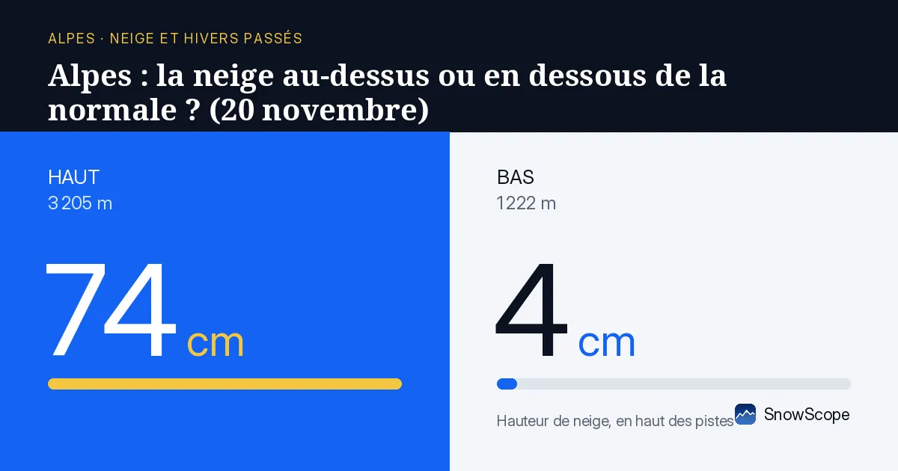
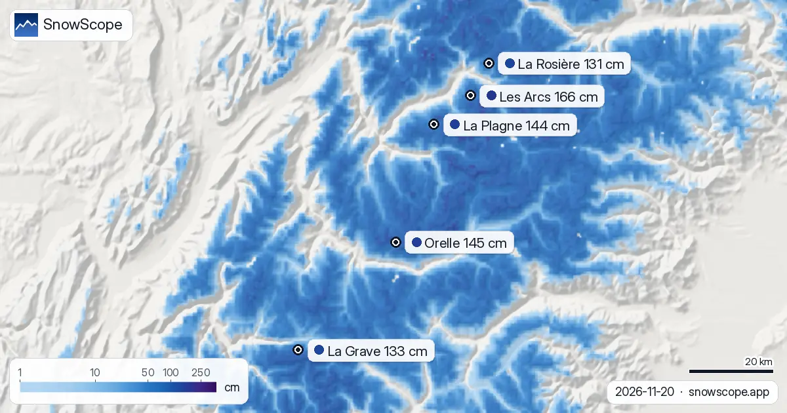

Alpes : la neige au-dessus ou en dessous de la normale ? (20 novembre)
5 stations dans les Alpes, 46 hivers passés, une date : voici comment se situe aujourd'hui. Nettement au-dessus de la normale : 0. Confiance : bonne pour la tendance, plus faible pour chaque chiffre pris seul.
Consultez les prévisions neige en temps réel pour Les Arcs sur l'application SnowScopeHauteurs de neige, alertes poudreuse et carte 3D, gratuitement.
La carte de neige du jour
En haut de la liste : Les Arcs, environ 166 cm en altitude. Puis Orelle 145 cm et La Plagne 144 cm.
Le compte du jour dans les Alpes : 874 stations sur 1 204 avec de la neige en haut, 77 180 km² de sol enneigé.
Quelle confiance ? Les valeurs des stations de ski sont des estimations pour le haut du domaine ; les stations de mesure donnent des mesures, chacune en un point à la date indiquée.
| Station | Hauteur de neige | Neige fraîche, 72 h | Attendu, jours suivants | Sommet |
|---|---|---|---|---|
| Les Arcs | 166 cm | 134 cm | 77 cm | 3 205 m |
| Orelle | 145 cm | 143 cm | 92 cm | 3 221 m |
| La Plagne | 144 cm | 125 cm | 77 cm | 3 058 m |
| La Grave | 133 cm | 122 cm | 108 cm | 3 543 m |
| La Rosière | 131 cm | 130 cm | 72 cm | 2 799 m |

Face aux hivers passés
Vers 2 213 m, Les Arcs a 44 cm aujourd'hui ; un 20 novembre normal y compte 32 cm.
C'est plus que lors de 28 des 46 hivers passés à cette date.
Une telle avance compte surtout pour les pistes basses et moyennes, qui attendent d'habitude décembre pour autant de neige.
Jour après jour à Les Arcs : vendredi 20 novembre 53 cm; samedi 21 novembre 8 cm; dimanche 22 novembre 52 cm; lundi 23 novembre 17 cm.
Altitude par altitude à Les Arcs : 1 222 m 4 cm au sol, 4 cm de plus dans les 7 prochains jours; 2 213 m 38 cm au sol, 46 cm de plus dans les 7 prochains jours; 3 205 m 74 cm au sol, 48 cm de plus dans les 7 prochains jours.
Est-ce normal ?
Dans la moyenne à Les Arcs : 44 cm à 2 213 m, plus que lors de 28 des 46 hivers passés à cette date (habituel : 32 cm).
Orelle, 2 779 m : 49 cm, proche de la normale (habituel : 64 cm) ; plus que lors de 17 des 46 hivers passés.
Dans la moyenne à La Plagne : 36 cm à 2 137 m, plus que lors de 22 des 46 hivers passés à cette date (habituel : 38 cm).
Sous la moyenne à La Grave : 39 cm à 3 369 m contre 80 cm d'habitude, et seuls 10 des 46 hivers passés en avaient moins un 20 novembre.
La Rosière, 1 995 m : 36 cm, proche de la normale (habituel : 28 cm) ; plus que lors de 27 des 46 hivers passés.
La prévision en bref
Prévision jusqu'au 23 novembre : 108 cm à La Grave, 92 cm à Orelle et 77 cm à Les Arcs. Prudence sur les derniers jours.
Les prévisions à quelques jours peuvent changer : regardez à nouveau la carte la veille du départ.
Conseils aux skieurs
- Les pentes sud prennent le plus de soleil et fondent d'abord ; les pentes nord en altitude gardent leur neige le plus longtemps.
- De la neige sur la carte ne veut pas dire que la station est ouverte : vérifiez remontées et dates d'ouverture sur son site.
- La neige de début de saison est fine. Restez sur les pistes ouvertes et damées : cailloux et herbe se cachent juste dessous.
- Activez une alerte poudreuse dans l'app SnowScope pour savoir quand Les Arcs reçoit de la neige fraîche.
À propos de ces chiffres
Les hauteurs de neige des stations sont la neige la plus épaisse sur le haut du domaine à la date indiquée ; ce sont des estimations pour une zone, pas une mesure en un point. Les prévisions peuvent changer. Consultez toujours le bulletin d'avalanche officiel avant le hors-piste.
Bulletins d'avalanche officiels: EAWS (Alps)
Citer ce bulletin
Pour la recherche, l'enseignement ou la presse : chiffres et graphiques réutilisables librement sous CC BY 4.0 avec cette citation.
SnowScope (2026), Alpes : la neige au-dessus ou en dessous de la normale ? (20 novembre), https://snowscope.app/blog/fr/2026/11/alps-snow-vs-past-winters-20-november-2026.html, consulté le 2026-11-20
SnowScope (Atlas Labs). (2026, November 20). Alpes : la neige au-dessus ou en dessous de la normale ? (20 novembre). SnowScope snow reports. https://snowscope.app/blog/fr/2026/11/alps-snow-vs-past-winters-20-november-2026.html
BibTeX
@misc{snowscope2026alpssnowvspastwinters20n,
author = {{SnowScope (Atlas Labs)}},
title = {Alpes : la neige au-dessus ou en dessous de la normale ? (20 novembre)},
year = {2026},
month = nov,
howpublished = {\url{https://snowscope.app/blog/fr/2026/11/alps-snow-vs-past-winters-20-november-2026.html}},
note = {Published 2026-11-21 11:18 UTC; accessed 2026-11-20}
}· CC BY 4.0 · Méthodes, données et outils →
Les Arcs : neige et température selon l'altitude, cet hiver vs l'hiver dernier (outils) →
Suivre Les Arcs
Gratuit : un message quand la neige arrive, et la météo chaque matin.